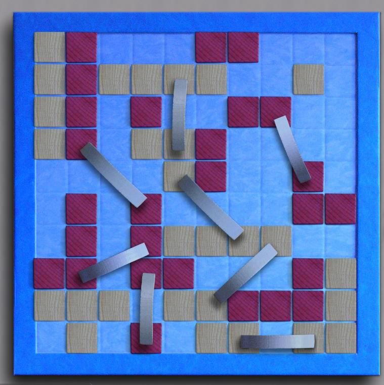

Ponte Del
Diavolo
Ponte del Diavolo is a connection game with some similarities
to Twixt, but with a lot of subtlties caused by the geometry of islands.
Islands are orthoginally connected groups of exactly 4 tiles.
Sandbars are connected groups of size less
than 4. Islands cannot be larger than 4, and cannot be
diagonally adjacent to any tiles of the same color. Scoring
is based on the number of islands in a connected network, including
indirect connections using sandbars.
You can read the details in the official rules
here.
|

|